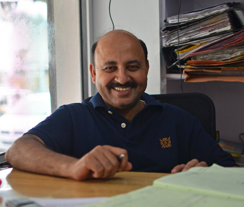

Personas
Booker: Jennifer Wong Jennifer is a 28 year old part -time front desk receptionist at a local community centre. She is currently back in school at Humber College studying to be a Social Service Worker diploma. She is a bright and energetic young woman who loves to travel. Having grown up in Canada, she decided to backpack across south-east asia after she graduated from high school. During her travels in Asia she met an older Canadian man, Brent Hadley, whom she fell in love with, it was a whirlwind romance. After three years of travelling together they moved back to Hamilton and decided to start their lives together. Wong and Hadley had a son, James, in 2003 who suffered a debilitating head injury at the age of 2 causing him to develop aphasia, an impairment in the language processing region of the brain. Jennifer's husband is an independently wealthy consultant, and is able to provide more than adequately for his his wife and child. Unfortunately due to James' condition he required much more supervision and parental guidance causing Jennifer to have to stay at home and be with him during the day. In particular it was very difficult for James to attend school as he needed special accomodations due to his learning disability. Since adjusting to James' situation Jennifer has spent most of her free time speaking to other mothers who have an aphasic child and working with organizations to try and develop better education and services for children with learning disabilities. During her work with these non-for profit organizations she realized that she was particularly interested in working with individuals to provide them better access to social services. Since Brent has started working from home, and James is getting older, with the help of a part-time carer, Jennifer has had the chance to go to school and pursue her goals. Working at Storefront provides another way for her to get to know the community she grew up with, and contribute to the collaboration of different projects. Since she is still in school at the moment it is hard for her to be fully engaged with all the different projects, and working part time is the perfect fit for her at the moment. Jennifer is very effective at using new and emergent technologies. Her dad was in IT and she grew up around computers. She had also been a pretty intense gamer in her youth. Now she is connected via LinkedIn, Twitter, Instagram, Facebook, and blogs about new trends in social services. She owns an iPhone, and an iPad tablet which she uses to keep updated with current events on the GO train commute to work. Part of Jennifer's duties working at Storefront is to facilitate the booking process between an organization and the community centre. Since she has a very busy lifestyle, being both a mother and a student, she needs a reliable way to access the system while on-the-go, and refer to it from any where she it, whether at home, work, or school. Client: Juan MartinezJuan Martinez is a 25 year old male teacher at the Galloway public school. He has been teaching there for 2 years now, and teaches the class for children with special needs. He studied Psychology at McMaster University and went on to teachers college at University of Toronto.
In the classroom, Juan makes his lessons using Microsoft word and powerpoint. He keeps track of his schedule using Google Calendar, which he accesses from his computer at school or his iPad at home. He prefers things with a simple interface, as he does not like digging through menus to get what he wants.
Juan is a very social and friendly person. He gets along well with kids (as he is a teacher), and wants to give back to the community as much as possible. As a child, Juan attended many events at his local community centre in East Scarborough and was very thankful for all the volunteers, since his family was not very wealthy. Juan was rather unfit for his age, and was often picked on by the other students for his weight. However, the students with special needs often accepted Juan and played with him during recess. As Juan grew up, he was actively involved in volunteering for people with special needs. So, when he became a teacher, he decided that he would want to work with these students.
Juan lives about 10 minutes away near the Guildwood GO station. He lives with girlfriend, Jessica, and has no children. Jessica is a manager at the local Wal-Mart. Juan’s parents are retired and live near Scarborough city center. Sadly, his dad often has heart attacks and ends up in the hospital once in a while. His brother, is still a student studying to become a welder at Centennial College.
In his spare time, Juan likes to kick back and play a few games on his Xbox 360 with some old friend from college online. He mainly keeps in touch with his friends and family using Facebook, with the occasional Skype call using his iPad. Juan loves to cook, and he likes to attend the Community Living Toronto Cooking Class at East Scarborough Storefront. His favourite dish to make is spaghetti and meatballs. Juan owns an old iPhone 3G that he usually uses just to make texts and calls now, since it is too slow. He is also an avid painter; his favourite medium is oil painting.
As aforementioned, Juan usually goes to East Scarborough storefront to go to the Community Living Toronto Cooking Class. He also volunteers there on the weekends while he waits for his girlfriend to get off work. He teaches the Community Living Toronto Art Class, to give back to the community and improve his skills when working with children who have special needs. He hopes to be able to book his art lessons online from his school computer or iPad, because he usually does this during his students’ lunch breaks and it is not always convenient for him to head over to Storefront because he may not have enough time. Juan is often frustrated with the manual booking system, as sometimes he would book a time, and later receive a call telling him that the room he wanted is not available. Juan feels very guilty when he has to cancel a class last minute, because his dad sometimes ends up in the hospitals over the weekends. Unfortunately, there is no way for Juan to tell his students that he cannot make the lesson for the day, or book a make-up lessons because it is often a hassle to get a room.
Supervisor: Jahan Malik Jahan Malik is a 41-year-old supervisor at a local nonprofit organization. He was born and raised in Mumbai, India, where he attended a local university and obtained a degree in social work. Jahan recently moved to Canada 5 years ago to pursue a career more closely related to his university specialization. He has 4 siblings and a very large extended family, which was the only thing holding him back from emigrating for so many years. Jahan has been happily married for 17 years, and lives with his wife and son who came with him to Canada. He pursued a degree in social work due to his inherent desire to help others. From a young age, he has always been putting the needs of others before his own.
Jahan and his family live in a small, two bedroom apartment in east Scarborough. They are saving money in hopes of buying their own house in the near future. Jahan’s commute to work takes about 25 minutes by bus, and he often takes this time to read the morning newspaper. He has worked at the East Scarborough storefront for almost three years, starting as a receptionist. He worked his way up to supervisor 11 months ago due to his passion, drive, and selflessness. He works a steady 40 hours each week, with evenings and weekends off. Jahan has strong interpersonal and organization skills, which suit perfectly to his main duties. These include scheduling room bookings, promoting the organization, and maintaining close relationships with current clients. He shares the ability to make official bookings for clients with the other supervisor. Jahan always greets clients, whether new or old, with a beaming smile and positive attitude.
Jahan usually begins his day with a hot cup of coffee and a quick breakfast from Tim Hortons. Every Wednesday after work, he stops by the local convenience store to purchase his favourite snack and a lottery ticket. When not at work, he splits his free time between his family, volunteering, and watching hockey with his friends. Every year, he and his family take time off to visit their relatives back home in Mumbai. He hopes one day to bring his son to visit England, which he has fond memories of attending during a summer exchange. Jahan organizes the annual Movember campaign in east Scarborough to raise money for prostate cancer. He is an avid Toronto Maple Leafs fan, but has yet to attend a game in person.
Jahan frequently uses technology for work-related activities, but mainly sticks to surfing the web and sending emails at home. He also has a cellphone which he primarily uses to make calls and send texts. In the office, Jahan is constantly frustrated with the limited features of the current room booking software, which is only available on his office computer. Jahan would like a user friendly scheduling system that he can access from anywhere, as clients request bookings often and Jahan is not always in the office. It is also critical that his clients are able to see which times are available, as Jahan often ends up sending many emails back and forth between clients to find appropriate booking times.